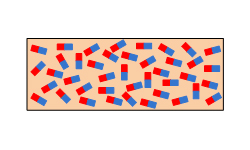

La superconductividad es un fenómeno cuántico que se manifiesta macroscópicamente como la pérdida de la resistencia eléctrica por debajo de una temperatura crítica, en ciertos materiales que llamamos superconductores.
Otra manifestación es la expulsión del interior del superconductor de un campo magnético externo; fenómeno conocido como efecto Meissner.
La superconductividad es uno de los fenómenos físicos que mayor atención ha recibido por la comunidad de físicos desde que se descubrió en 1911. Sin embargo, fue hasta 1957 que se logró explicar el mecanismo microscópico de la superconductividad que hoy conocemos como convencional.
En 1986 la superconductividad mostró una nueva faceta con el descubrimiento de superconductores con temperaturas críticas más altas que la temperatura de licuación del nitrógeno (77 K), por lo que a los nuevos superconductores los conocemos como superconductores de alta temperatura crítica Tc.
A pesar de que han pasado más de 35 años del descubrimiento de los superconductores de alta temperatura crítica, todavía no se tiene una teoría que explique el mecanismo microscópico que origina la superconductividad de alta Tc.
Actualmente se continúa con la búsqueda y el descubrimiento de superconductores con temperaturas críticas cada vez más altas en todo tipo de materiales y en condiciones extremas de presión.
Así, en septiembre del 2015 se reportó el descubrimiento del superconductor hidruro de azufre H3S bajo una presión de aproximadamente un millón de atmósferas con temperatura crótica de 203K.
Ahora en el 2021 el superconductor con la temperatura más alta descubierto en octubre del 2020 (E. Snider, et al., Nature 586, 373 (2020)) es el hidruro de azufre carbonatado (CSH) con una Tc = 287.7K (14.5°C) pero a una presión de 267GPa, es decir, 2.6 millones de atmósferas.
La superconductividad ocurre en una gran variedad de materiales, incluyendo elementos simples como el estaño y el aluminio, diversas aleaciones metálicas y algunos semiconductores fuertemente dopados.
La superconductividad, normalmente, no ocurre en metales nobles como el cobre y la plata, ni en la mayoría de los metales ferromagnéticos.
Pero en ciertos casos, el oro se clasifica como superconductor; por sus funciones y los mecanismos aplicados.
Comportamiento Magnetico
Aunque la propiedad más sobresaliente de los superconductores es la ausencia de resistencia, lo cierto es que no podemos decir que se trate de un material de conductividad infinita, ya que este tipo de material por sí solo no tiene sentido termodinámico. En realidad un material superconductor de tipo I es perfectamente diamagnético. Esto hace que no permita que penetre en el campo, lo que se conoce como efecto Meissner.
El campo magnético distingue dos tipos de superconductores: los de tipo I, que no permiten en absoluto que penetre un campo magnético externo (lo cual conlleva un esfuerzo energético alto, e implica la ruptura brusca del estado superconductor si se supera la temperatura crítica), y los de tipo II, que son superconductores imperfectos, en el sentido en que el campo realmente penetra a través de pequeñas canalizaciones denominadas vórtices de Abrikosov, o fluxones.
Estos dos tipos de superconductores son de hecho dos fases diferentes que fueron predichas por Lev Davidovich Landau y Aleksey Alekséyevich Abrikósov.
Cuando a un superconductor de tipo II le aplicamos un campo magnético externo débil lo repele perfectamente. Si lo aumentamos, el sistema se vuelve inestable y prefiere introducir vórtices para disminuir su energía. Estos van aumentando en número colocándose en redes de vórtices que pueden ser observados mediante técnicas adecuadas. Cuando el campo es suficientemente alto, el número de defectos es tan alto que el material deja de ser superconductor.
Este es el campo crítico que hace que un material deje de ser superconductor y que depende de la temperatura
